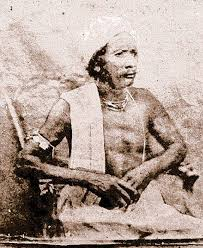

Veer Surendra Sai
An Indian revolutionary socialist
who was influential in the Indian independence
movement.

Photos Of Verr Surendra Sai
Here's a time line of Veer Surendra Sai's life:
23 January 1809
Birth of freedom fighter Surendra Sai
- Surendra Sai was born in his ancestral home at Sambalpur District in 1809. He was a direct descendant of Madhukar Sai, Maharaja of Sambalpur of the Chauhan dynasty in the 16th century. His father was sixth in line to the throne of Sambalpur.
- Even though Sai led a valiant struggle against the British, his name is virtually unknown to most Indians. He had started a fight against foreign rule even before the 1857 Revolt and continued it well after the Revolt had subsided.
- Between 1808 and 1817, Sambalpur was occupied by the Marathas. After the Third Anglo-Maratha War, the British restored Sambalpur to the Chauhan kings but as mere puppets.
- In 1827, the ruler of Sambalpur, Maharaj Sai died without an heir. The British then put his queen Rani Mohan Kumari on the throne. In 1833, they removed the Rani and placed an old Zamindar Narayan Singh on the Sambalpur throne. The reigns of both the Rani and Narayan Singh were highly unpopular as the rents were made steep high and the people suffered vastly. In reality, the British were calling the shots in the state.
- Through the Doctrine of Lapse, Sambalpur was annexed by the British in 1849 when Narayan Singh died heirless.
- All this created a situation that was ripe for rebellion. Surendra Sai, who was trained in guerrilla warfare and horsemanship, was looked upon by many as their leader. He was supported by the Zamindars as well as the tribal people.
- In an open attack on the British in Sambalpur, Sai was caught and imprisoned for 17 years, from 1840 till 1857.
- In 1857, during the Sepoy Mutiny, sepoys from the Ramgarh battalion broke open the Hazaribagh jail where Sai was kept and freed him and others.
- He reached Sambalpur and acquired a fighting force of about 1500 men. He fought against the British through guerrilla warfare from 1857 to 1862. Despite strong measures by the government including burning villages whose inhabitants helped Sai, he continued his struggle for freedom and pride.
- In 1864, Sai was finally caught by the British with the help of a spy who betrayed Sai.
- Since it was considered too unsafe to keep him in Sambalpur, he was sent to prison in Asirgarh fort jail in present-day Madhya Pradesh.
- He languished in jail for 20 years during which he lost his eyesight.
- 1862, Sambalpur was transferred to the Central Provinces.
- Veer Surendra Sai, as he was called, breathed his last in Asirgarh Jail on February 28, 1884.